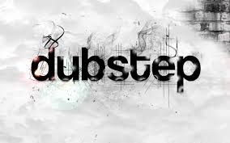
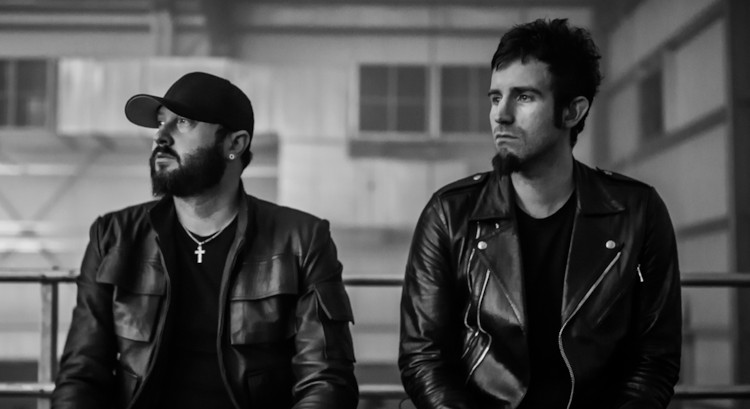

귀로는 들을 수 없는 초저역대의 사운드(서브 베이스라 부른다)를 몸으로 느낄 수 있다는 점은 커다란 사운드 시스템 스피커의 특징이였다..
초저역대의 사운드를 제대로 된 부피로 전달하기 위해 사운드 시스템의 스피커는 나날이 커졌고 자메이카의 레게 역시 이에 영향을 받아 발전해 갔다.
이때 등장한 기술 중 하나가 1960년대 말부터 번져나간 덥(Dub)이다. 우리가 흔히 얘기하는 더빙의 의미를 가진 덥은 믹서와 이펙터를 통해 특정 사운드를 없애고 특정 사운드를 키우고,
또는 딜레이 같은 기술로 음악에 공간감을 부여하는 음향 기술이다. 이렇게 해서 만들어진 새로운 음악을 버전(Version)이라고 한다.
이제는 흔히 접할 수 있는 리믹스의 원형인 셈이다. 이때부터 레코드의 B면에 사운드 시스템에서 틀기 위한 버전을 싣는 경우가 늘었고, 이런 기술적 특징이 도드라지는 음악을 덥 뮤직이라 일컫는다.

펜듈럼의 주축 멤버인 롭 스와이어와 DJ와 베이스 기타 담당이던 개러스 맥그릴런의 프로젝트 그룹.
주로 덥스텝과 하우스 장르의 일렉트로니카 음악을 작곡한다. 기존 펜듈럼의 팬들과 특유의 공격적인 음악 스타일로 인해 국내에도 상당한 팬층을 보유중이며, 한국 리스너들의 애칭은 칼잔치

그들의 엄청난 저음을 들어보자